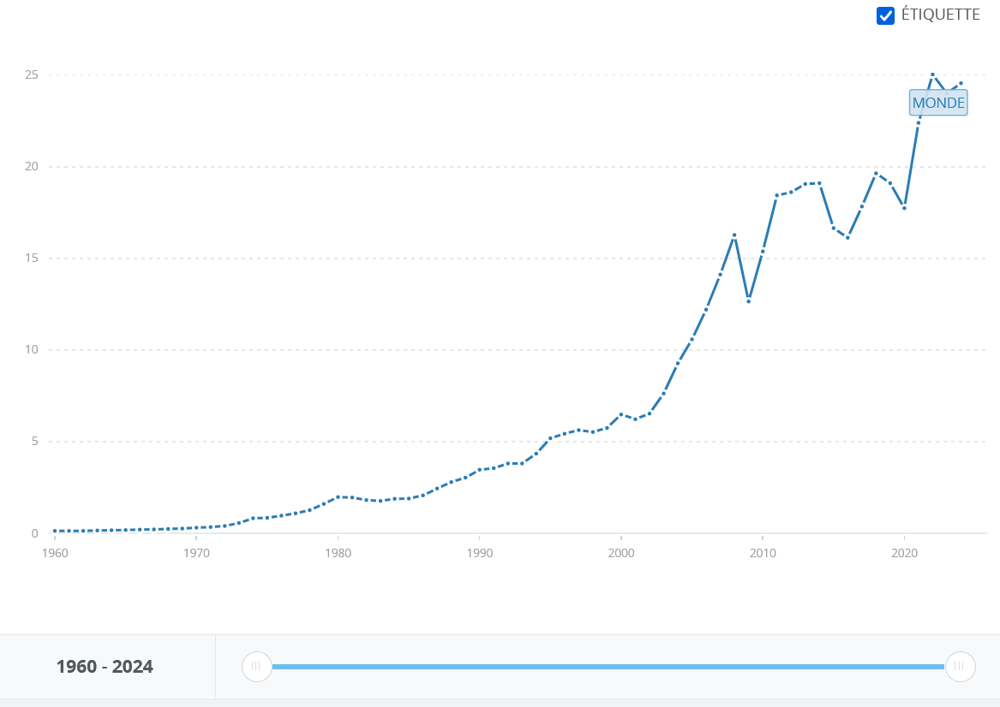
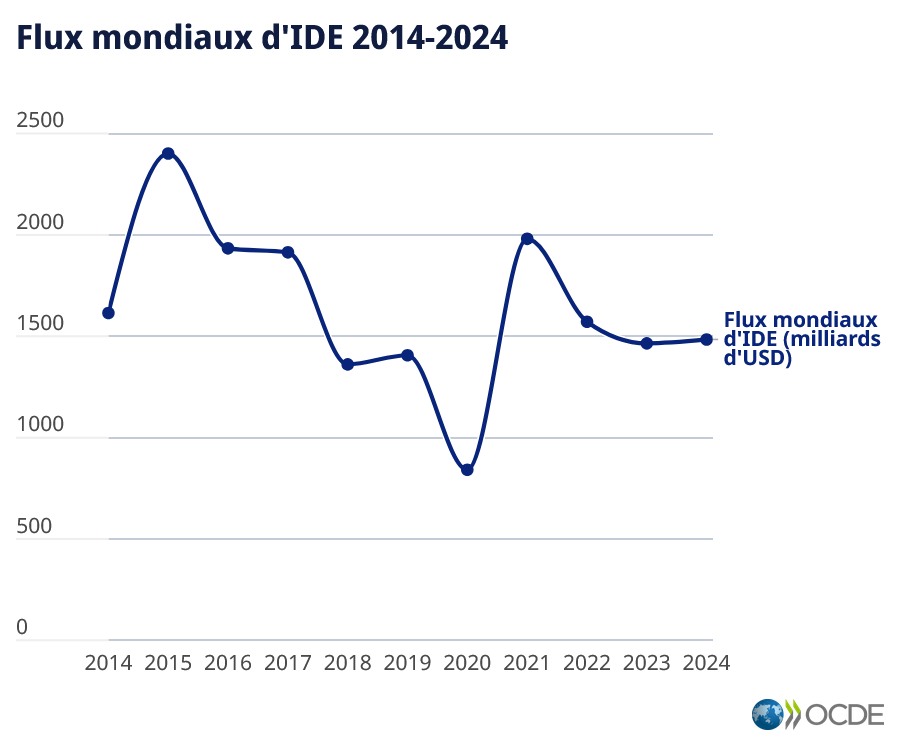
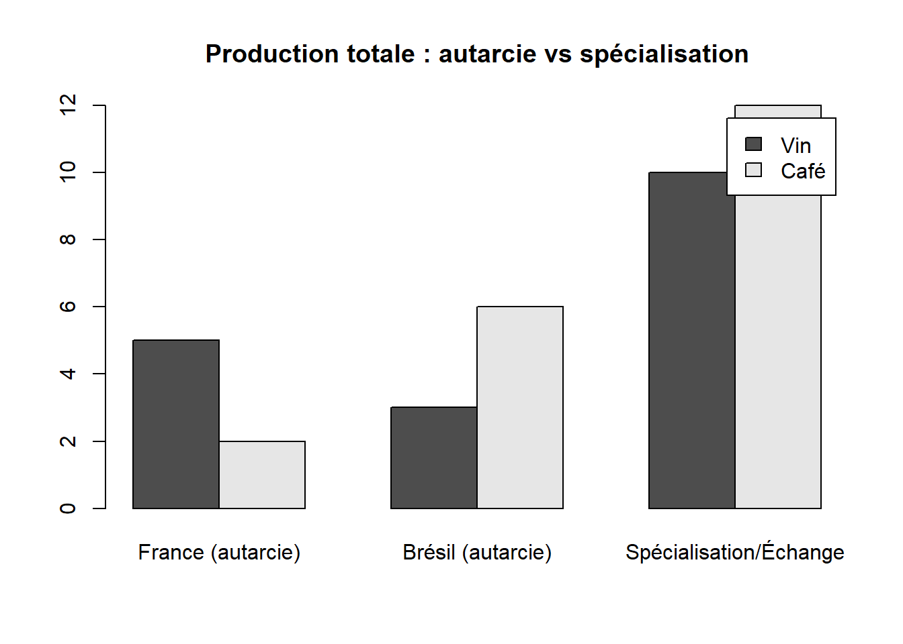

L’internationalisation désigne soit le processus d’intensification des échanges de biens et services entre les etats, soit l’organisation de la production des firmes à l’échelle du monde.
par le biais de filiales, de la sous-traitance, et d’investissements directs à l’étranger (IDE), les Firmes MultiNationales (FMN) divisent la production de leurs biens en plusieurs étapes réalisées dans différents pays.
Le commerce international a évolué avec les révolutions industrielles, les crises économiques et les progrès technologiques
Accords de Bretton Woods (1944): institutions internationales (FMI, banque mondiale)
GATT (1947)
OMC (1995)
Evolution des flux des échanges
échanges inter-branches: échanges entre pays de biens de nature différente (Ricardo; HOS) ex: France exporte des produits manufacturés et importe des produits primaires (Matières Premières)
Emergence de flux intrabranches (Linder; Krugman) ex: France exporte des voitures en Chine et en importe d’Allemagne
Flux intra-firmes et commerce intra-régional entre pays signataires d’accords de libre échange (ALENA, MERCOSUR, UE …)

Evolution des exportations mondiales ($US courant); source: Banque mondiale

Les théories
La théorie des avantages absolus (Adam Smith, 1776)
Spécialisation dans les biens où un pays est le plus efficace en termes de coûts de production.
Exemples:
Allemagne: production de machines-outils sophistiquées
Brésil: production de café à moindre coût
La théorie des avantages comparatifs (David Ricardo, 1817)
Spécialisation là où le pays a le plus grand avantage ou le plus petit désavantage. Spécialisation selon le coût d’opportunité le plus faible, même si un pays est plus productif dans plusieurs secteurs.
Exemples :
Etats-Unis: production de logiciels
Mexique: production de composants automobiles
Pays
Heures pour 1 unité (Vin)
Heures pour 1 unité (Drap)
Prix relatifs (a/b)
Taux d’échange (1 vin = 1 drap)
Gain en heures
Coût relatif vs Angleterre (Vin)
Coût relatif vs Angleterre (Drap)
Portugal
80
90
0.89
1 vin = 1 drap
10
67%
90%
Angleterre
120
100
1.20
1 vin = 1 drap
20
100%
100%
Source: L’économie mondiale 2002, p.90-104,Bernard Lassudrie-Duchêne et Deniz Ünal-Kesenci
2. Exemple simple (Deux pays, Deux produits)
Deux pays : France et Brésil
Deux produits : Vin et Café
Pays
Production en 1 jour si consacré 100% à un seul bien
France
10 unités de vin ou 5 de café
Brésil
6 unités de vin ou 12 de café
Coût d’opportunité : - France : produire 1 café = renoncer à 2 vins → avantage comparatif dans le vin - Brésil : produire 1 café = renoncer à 0,5 vin → avantage comparatif dans le café
Le coût d’opportunité d’un bien = quantité de l’autre bien à laquelle il faut renoncer pour en produire 1 unité.
Pays
Coût d’opportunité d’1 unité de vin
Coût d’opportunité d’1 unité de café
France
0,5 unité de café (5 café → 10 vin → 5/10 = 0,5)
2 unités de vin (10 vin → 5 café → 10/5 = 2)
Brésil
2 unités de café (12 café → 6 vin → 12/6 = 2)
0,5 unité de vin (6 vin → 12 café → 6/12 = 0,5)
France se spécialise → vin
Brésil se spécialise → café
Ils échangent → chacun consomme plus que s’il produisait seul.
3. Visualisation des gains à l’échange
Ci-dessous, un graphique montre la production avant (autarcie) et après spécialisation & échange.
graphique données fictives
Show the code
pays <-c("France (autarcie)", "Brésil (autarcie)", "Spécialisation/Échange") vin <-c(5, 3, 10) # unités cafe <-c(2, 6, 12)barplot( rbind(vin, cafe), beside =TRUE, names.arg = pays, legend.text =c("Vin", "Café"), main ="Production totale : autarcie vs spécialisation" )

Régulation et institutions internationales
OMC (1995) qui fait suite au GATT : de nombreuses mesures facilitant les échanges (suppression des droits de douane)
Libre échange et/ou protectionnisme?
Libre-échange
Avantages comparatifs (Ricardo); HOS (Heckscher; Ohlin; Samuelson)
HOS: La spécialisation des pays dépend de leurs dotations factorielles initiales
Un jeu gagnant-gagnant ?
Rôle de la demande
Linder : la production nationale vise à satisfaire la demande intérieure
Lorsque celle-ci est satisfaite on peut exporter
=> Flux intra-branches liés aux niveaux de développement des pays
Nouvelles théories du Commerce International
Krugman: comment expliquer le commerce intra-branches? En produisant, les entreprises bénéficient d’économies d’échelle.
Limites
Dumping (économique, social, environnemental)
Protectionnisme
Politique commerciale qui vise à empêcher ou limiter les importations
Objectifs: rééquilibrer les déficits extérieurs, protéger l’emploi national, aider une industrie à se développer, protéger un modèle social, représailles envers un pays …
Protectionnisme tarifaire
Protectionnisme non tarifaire
Imposition d’une taxe à l’entrée des Biens et Services en provenance de l’étranger
instauration de quotas, de règlementations (normes sociales, environnementales)
Protectionnisme éducateur: List (1789-1846); protectionnisme sélectif et temporaire pour les industries naissantes.
Kaldor: protectionnisme défensif protégeant toutes les industries menacées par la mondialisation
Protectionnisme pour protéger l’environnement.
Krugman: protectionnisme conquérant; par le jeu des économies d’échelle, plus la production nationale augmente, plus le coût moyen diminue. L’entreprise devient plus compétitive et peut exporter plus.